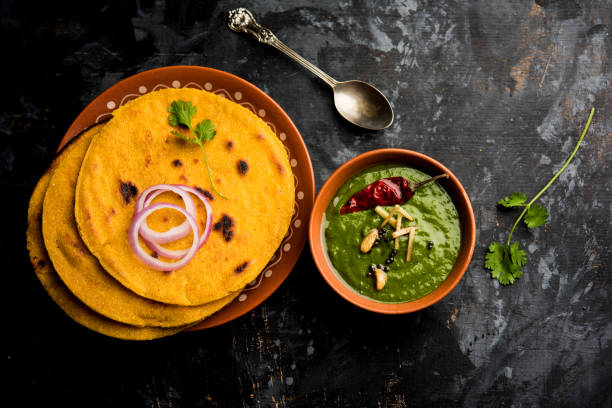

Back to States
Sarson da Saag

Ingredients
- 1 kg mustard greens (sarson)
- 250g spinach (palak)
- 100g bathua leaves
- 2 onions, chopped
- 2 tomatoes, chopped
- 2 tbsp ginger-garlic paste
- 4 green chilies
- 2 tbsp maize flour
- Salt to taste
- Ghee for serving
- Makki ki roti to serve
Instructions
1. Clean and chop all the greens finely.
2. Pressure cook greens with chilies for 15-20 minutes.
3. Blend the cooked greens to a coarse paste.
4. In a pan, sauté onions until golden.
5. Add ginger-garlic paste and tomatoes.
6. Add the greens paste and maize flour.
7. Simmer for 20-25 minutes.
8. Serve hot with makki ki roti and ghee.